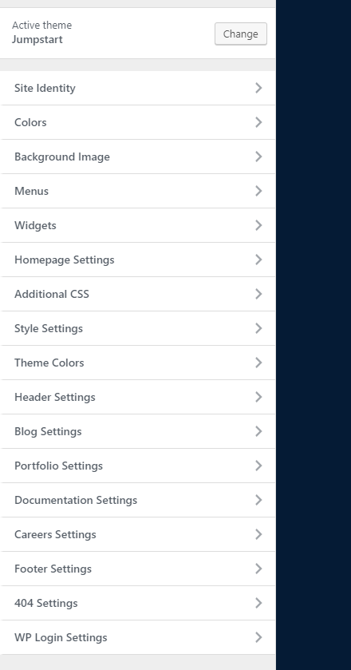

Welcome, and thank you for choosing a TommusRhodus theme.
We pride ourselves on providing excellent documentation so this guide will help you get the most from your new theme. We will take you through everything from installing the theme, to creating menus, using the theme options and much more. Please take a moment to read through the articles below to familiarise yourself with your new theme and of course, if you need any assistance along the way, we are always on hand to help.
We also have a number of video tutorials which detail certain aspects of Jumpstart - check out our YouTube playlist here.
This document covers the installation, set up, and use of this theme, and provides answers and solutions to common problems. We encourage you to first read this document thoroughly if you are experiencing any difficulties before contacting our support team.
Uploading Through WordPress
To upload through your Dashboard, select “Appearance” and then “Themes”. Next, select the “Install Themes” tab at the top of the page and then select the “Upload” link, right above the search field. Choose your file and select “Install Now”. Once the theme is fully uploaded and installed, click “Activate” to activate the WordPress theme.
The theme files will be stored on your server in the wp-content/themes location.
When uploading your theme with the installer, please ensure you are uploading the theme .zip file, not the entire package you downloaded. In this case, you will be uploading JumpstartWPtheme.zip.
FTP Upload
To manually upload your new WordPress theme, login with your credentials to your website and locate the wp-content folder in your WordPress install files. Upload the un-zipped Jumpstart WordPress Theme folder into the: wp-content/themes folder.
Once uploaded, activate the theme by heading to the “Themes” menu in the WordPress Dashboard. Locate the Jumpstart WordPress Theme theme and hit “Activate”.
Looking for a good, free FTP solution - why not try FileZilla or CyberDuck
Although we take the greatest care to make the setup process as simple as possible, in some cases (esspecially on budget hosting where resources and at a bare minimum) you may experience an issue during the automatic setup - this section covers an alternative fallback method you can use should the need arise.
Importing The Demo Data Manually
The first thing we need to clarify is setting up manually will mean things like widgets and theme options wont be setup for you - this is unavoidable but it will still give you a great base of all the demo pages ready for you to start building your new site.
To begin, install Attachment Importer - this is a lightweight importing tool for images and will be needed later on to import the demo images/media. Once done, head to Tools > Import and select WordPress to open up WPs built in importing tool (you may need to install it to continue)
Uploading the XML File
Next you will need to locate the themes demo-data.xml file, this will be included in the Demo Data folder in your main download package. Once located select this file and hit "upload". Next you will see a page which will allow you to choose if you wish to assign the demo posts to another user, as well as an option to import all media and attachments - be sure to leave this box unchecked as we will be taking care of this later (and want the import to be as light as possible to be more likley to work)
Once done you will see a notice informing you the operation is complete.
Importing the Images
Now you have the pages imported, its time to tackle the images. If you have not already done so, install and activate Attachment Importer and once done, head to Tools > Import and select the newly added Attachment Import from the list of tools to continue.
Once here, locate the demo XML file and upload - once done hit "Import" and allow the process to take place. Depending on the number of images this process will take some time, so be sure to leave your browser alone whilst its happening (though you can of course open another tab and continue to browse freely)
Final Step
Ok so you now have the pages and images all imported and ready, you now need to simply setup your homepage/blog and menu. To do this head to Settings > Reading to choose your homepage and posts page, and then head to Appearance > Menus to assign the demo menus.
To access the theme options, you may select the Customize button in the admin bar dropdown or select "Customize" from the Dashboard menu. Note that you must be logged in as a site administrator in order to access the controls.
Theme Options

1 - Site Identity
Here you can specify a site title, tagline and favicon (the small icon shown in your browser window) and more crucially, your own custom logo.
Setting up your own logo is very simple - just use the uploader provided and you can either choose an image from your media library, or upload something fresh, its up to you.
When uploading a logo the ideal size you should aim for is 200px x 62px
2 - Colours
This area allows you to specify the background colour used in your site.
3 - Background Image
Want to use your own image instead of a solid colour? No problem - simply use this option to upload your own image.
4 - Menus & Widgets
Here you can setup and edit your navigation and widgets, however, given the cramped nature of the WP Customizer, we recommend using WP's dedicated page found under the "Appearance" area in your Dashboard, which not olny gives you much more room to work with, but also a simpler interface - but this is of course totally up to you and your preference.
5 - Additional CSS
For those of you our there who want to apply your own custom bespoke styling, our themes provide you with a custom CSS area where you can quickly and easily apply your own custom CSS.
If your looking to make larger changes, or add a LOT of custom code, we highly recommend using a child theme - see below for details on getting this setup
6 - Style Settings
Here you will find Typography settings which allow you to customize the Google font used in your theme - see the video below for details on how this works. You will also find a range of colour options and header settings here.
7 - Theme Colours
This area allows you to control the themes colours as you wish - please note these can also be overridden on a per-page basis by using the page overrides also.
8 - Header Settings
This area gives you control of the global header layout as well as the header CTA button. Here you can choose the overall header layout (which can also be overridden on a per-page basis) as well as set the button label and URL for the header's CTA button (you can also leave these fields blank to remove the button if you prefer)
9 - Blog Settings
Here you choose a specific header style, layout and logo for your blog archive, as well as specify the title and subtitle used within your blog archive page and a field to specify your own Call To Action area content (shortcodes are allowed here).
10 - Portfolio Settings
Here you choose a specific header style, layout and logo for your portfolio archive. You will also find an area to enter your own Call To Action area content (shortcodes are allowed here).
11 - Documentation Settings
Here you specify the title and subtitle used in your documentation archive, as well choose a specific header style and logo for your documentation archive
Adding Search Terms to the Documentation Search Bar
To add you own pre-defined search terms, simply enter then into the textarea provided in a comma seperated format, like this Search Term One, Search Term Two, Search Term Three and so on.
12 - Careers Settings
Here you can enter your own submission form shortcode which appears at the bottom of a single job post.
13 - Footer Settings
This is where you can choose your desired footer layout as well as assign your social profile links, and customize your copyright text etc.
14 - 404 Settings
Here you can specify a logo to use on your 404 pages
15 - WP Login Settings
Here you choose a custom background image and logo to use within your sites login page.
Whilst the above theme options allow you to set the layout for the header and footer globally (for all pages) - in some cases you may wish to override these settings for a specific page, this is where our Overrides area comes into play.
To use the theme overrides, simply scroll down when editing a page and you will see an additional metabox just like the one pictured below. To override the header or footer layout, simple select the alternative layout from the relevant dropdown and your all set.
You are also able to override the logo used within the page here too, ideal if your looking for a neat contrasting look to the page or such.
Finally, with the page overrides your also able to customize the themes colours on a per-page basis, simpy use the colour pickers provided to give you page a unique look and feel from all the others. For details and an example of these overrides, please see the video below. Be sure to "activate" the custom colours by setting the override "Use Custom Colours?" to yes.
Creating menus within WordPress is very simple, and WP gives you a couple of methods to do this. We suggest using the dedicated menu page found under Appearance > Menus, however you are also free to use the menu management system found within the theme customizer/options page (Appearance > Customize)
Creating Menus
Once you’re viewing the Menus, the process of creating a menu is quite easy - essentially you create your menu item from the columns on the left (this can be a link to a post, page or other form of content) or even a custom link using the "Custom Link" menu item, you can see both in the image below. Once you have created your perfect menu, be sure to assign it to the Standard Navigation area and hit save to see it in action.
Creating Dropdown Menus
An important aspect to note when using our theme is the process of creating dropdowns/sub menus is the top level item (the menu item in the main menu area you click/hover to activate the sub-menu) needs to be a "Custom Link" menu item with a URL of just # - this allows the dropdown to work fully on both desktops and mobiles where 'hovering' is not available.
Adding a Side Menu to a Page
Adding a side menu to a page can be done via the Page Overrides area. Simply select the menu you wish to display under the "Select a menu to display" option in the page overrides area and your all set
Creating a Smooth Scrolling Side Menu
As you can see in our demo, the pages which use the side menu also have a neat smooth scroll effect. To add such a menu item simply head to Appearance > Menus and edit/create a menu, then add a Custom URL menu item with a URL based on the ID of the area you want to link to such as #section-id-here.
Once done, add the class "smooth-scroll" via the menu items "custom class" field and your all set
Jumpstart comes with two widgetized areas, the blog sidebar (shown to the side of the main post content within single posts) and the footer, which allows a number of columns of custom widget content for whatever you wish.
There are a couple of ways you can get started with widgets within WP, we recommomend the dedicated admin page found under Appearance > Widgets in your WP dashboard however you can also add/edit widgets to the available widgetized areas via Appearance > Customize however this can be a little cramped with your working with many widgets at once.
Adding Widgets
When you arrive at the Widget admin page, you will be presented with an array of widgets on the left and the widgetized areas on the right, to add a widget to one of the sidebars, simply drag your desired widget over to the sidebar of your choice on the right and your all set. From there simply edit the widget as you wish (depending on the widget your using of course) and your done.
The theme uses the popular WordPress page building tool, Elementor Page Builder, to allow you to quickly and easily create stunning pages. We provide some example in our pre-built demo data for you to get started with and study, but creating your own from scratch is a breeze too.
To begin, create a fresh page under Pages > Add New in your WordPress Dashboard. From there, simply hit the large "Edit with Elementor" button to beging working with the plugin.
NOTE - When working with Elementor, be sure to select the "Elementor Full Width" template under your pages attributes as seen below.
As you see in the demo, the theme, together with Elementor, offers a choice of nice section dividers (shapes which help break up content and give your page a unique look and feel). To add a divider to a section, simply head to the section settings (you can access these by right clicking your section and choosing "Edit Section", then under the Style tab you will see the area titled "Shape Divider".
Here you can choose a shape from one of our custom range or a default Elementor shape, and customize it as you wish.
Adding Parallax to a Video or Image Background
To enable parallax section, simply head to the section settings (you can access these by right clicking your section and choosing "Edit Section", then under the Style tab you will see the area where you can assign a background image or video to a section - once done, head to the Parallax tab (seen below) and enable the effect as you wish (its totally optional)
Adding Decorations
Jumpstart offers a range of neat little decoration images which allow you spice up your content with ease. Adding them is just the same as adding a regular Elementor block to a section, simply locate the "section decoration" block (seen below) and drop it into your desired section. You can then go ahead and pick one of the decorations in the block settings and your all set
Please note: you will notice the decorations may cover the content of the section of look a little out of place when initially added, to fix this you simply need to save and refresh your page. Once done they will appear as expected.
Jumpstart uses a small number of special classes which apply unique attributes to a section/row. These range from making the text within an area light in appearance, to even applying a neat background effect and more. These classes are detailed below and can be used by adding them to your section/rows by heading to a sections settings within Elementor, and under the Advanced Tab, you can enter any of the classes into the CSS Class field seen below.
bg-dark - This class gives your area a dark background colour, ideal of offsetting against a white section.
bg-white - This class gives your section a light-white background colour.
bg-primary - This class gives your section a primary background colour which can be set in the theme options.
bg-primary-2 - This class gives your section a primary 2 background colour which can be set in the theme options.
bg-primary-3 - This class gives your section a primary 3 background colour which can be set in the theme options.
bg-secondary - This class gives your section a complimentary secondary background colour which can be set in the theme options.
bg-light - This class gives your section a light, off gray background colour.
bg-white - This class gives your section a light-white background colour.
text-center - This class centers the text within an element.
Reordering columns on mobile
In some cases you may wish to reverse the order of some columns within a row when viewing on smaller screens, for this reason we have added some CSS classes which can be added to the columns CSS class field found under the advanced tab in a column's settings.
These classes are very simple, starting with -
order-xs-1
up to
order-xs-6
Simply add the class "order-xs-1" to the class field to have it appear 1st, "order-xs-2" to have it appear 2nd and so on.
Jumpstart is bundled with a number of high quality icons, for a reference of whats available and there classes please see the Icon Cheatsheet. This also includes reference to our selection of pre-defined colours you can apply to text/icons by adding the CSS class to them also.
Jumpstart is bundled with a small number of handy shortcodes, we will go though these below.
[jumpstart_login] - This shortcode will output a simple WP login form which you can place in pages etc as you wish.
[jumpstart_stars number_of_stars="5"] - This shortcode is handy for creating review style stars, you can select the number of stars to display by altering the "number_of_stars" accordingly
[jumpstart_video_lightbox_button media_url="YOUR YOUTUBE/VIMEO VIDEO URL HERE" button_style="icon" button_label="BUTON LABEL HERE"] - This shortcode allows you to create a neat play icon (or button with play icon) which can open a youtube/vimeo video in a lightbox. Simply enter the video URL in the "media_url" parameter and if you want a button style of link (rather than just a play icon) you can add 'button_style="icon"' to the shortcode.
[jumpstart_icon icon_name="Apple icon"] - Use this shortcode to output an icon from the themes provided icons.
[jumpstart_counter start="1" end="99999" counter_suffix="+"] - This shortcode is used to create a counter, you can specify a start and end point as well as an optional suffix (leave this out to have no suffix applied)
[jumpstart_icon_button label="LABEL HERE" icon_name="ICON HERE" button_style="large"] - Here you can create a neat icon button. You can specify the label/button text with the "label" parameter, as well as the icon etc. To control the buttons target you can use target="_self" etc
[jumpstart_countdown date="2020/10/05"] - This shortcode is used to create a countdown, simply specify a date in the format supplied in the example.
[typed_textn prefix="This theme is " heading_size="h1" text_colour="text-regular" text="Text One, Text Two, Text Three" underline="yes"] - This shortcode is used to create a a cool typed text effect. Simply use the format above being sure to supply the typed text in a comma seperated format.
To begin creating posts head to Posts > Add New in your WordPress Dashboard.
The process of creating posts with WordPress is very simple - you need to supply a title for your article, a featured image to represent your blog post throughout your site, and of course the main content itself via WP's post editor.
Featured Image
Upload a featured image - any size will work though we recommend 1600 x 1000px. The images will be automatically applied throughout all the neccessary templates and loops so be sure to pick the best shot to reprasent your work.
Giving a Category a Custom Colour
As you can see in the demo, each category is able to use a custom colour which is shown in its "pill" - to give your post category a custom colour simply head to Posts > Categories and use the "colour" field provided - seen below.
To begin creating your portfolio projects, head to Portfolio > Add New in your WordPress Dashboard.
Creating a project is very similar to a regular WordPress post, in essense you have the regular content area (where you could write a description of your work/your process etc), and gallery area where you can upload the images of your awesome project, and a featured image area (the featured image, much like a regular WP post, used to represent your portfolio item within Portfolio feeds and archive pages/searches etc. We will now detail each area.
Portfolio Subtitle
This allows you to enter a subtitle for you project which is shown above the main title when using the "Case Study" layout only.
Featured Image
Upload a featured image. The images will be automatically applied throughout all the neccessary templates and loops so be sure to pick the best shot to reprasent your work.
To begin adding a team post, head to Teamo > Add New in your WordPress Dashboard.
Creating a team item is very similar to a regular WordPress post, in essense you have the regular content area (where you could write a description of your work/your process etc), as well as an additonal area where you can specify a job title, email address and social icons as you wish. We will now detail each area.
Team Member Details
This is where you you can enter the job title for your member, as well as an optional label.
Featured Image
Upload a featured image - any size will work though we recommend 1200px x 900px. The images will be automatically applied throughout all the neccessary templates and loops so be sure to pick the best shot to reprasent your work.
To begin creating your documentation item, head to Documentation > Add New in your WordPress Dashboard.
Creating a documentation item is very similar to a regular WordPress post, simply add your content via the main content editing area and your all set.
Adding Icons/Description to Documentation Categories
As you can see in the Documentation archive page, each category of articles has a neat icon displayed next to it, as well as some descriptive text like you see below.
To add your own icon head to Documentation > Documentation Categories and click edit on the category you want to apply an icon to, then within the editing screen enter the icon name you wish to use in the field provided, as well as your desired description text.
Contact Form 7 is our recommended form plugin for WordPress. It is a simple but powerful form creator for WordPress. Here we will show you how to use Contact Form 7 to create and edit a basic form.
After Contact Form 7 is installed, you’ll find a new menu item in your WordPress admin area called Contact, here is where your forms and created and edited. From the Contact main screen, you will see your first contact form, its usually a default form called 'Contact Form 1' OR if you have imported the demo data for our theme you may see a few forms that we have made specially for you.
When creating and editing forms CF7 uses simple shortcodes (in WordPress these shortcodes are words surrounded by square brackets like “[” and “]”) - these shortcodes are generated via the 'Generate Tag' area (marked in red) and then placed in the form builder area (marked in blue) - you can also add your own HTML to the form for extra control.
Contact Form 7 Basics
Form Styling
The forms within Jumpstart are created using Contact Form 7 - one of the finest free form plugins for WP, however out of the box, you may notice forms not created/imported via the Demo Data look a little unstyled - the reason for this is our forms use simple HTML and CSS Classes to apply the styling you see in the demo.
What does this mean? Well, to create stylish, styled forms you will need to apply a few key CSS classes to your form elements - for an example of what this looks like, see the example form examples below.
You will notice overall, the code looks the same as any other form created with CF7, however you will see the submit button has a couple of CSS classes added to it. These classes give the button the stylish look to see in the demo so if your wish to recreate this, add the classesbtn--primary and btn And your all set.
How to Add a Class to A form Element
Adding a custom css as easy with CF7, to do this you can use the field provided when creating your form element, or manually add the class (or classes) if you wish. For an example of this see the animation below
Want the forms without ALL the demo data?
Not a problem, you can grab the form XML data here
As with any WordPress theme, translation is handled via the provided POT file and is generally quite straightforward - we cover this in detail over in this tutorial - however the whole process can be simplified using an excellent plugin as Loco Translate
If your looking for multilanguage support, we highly recommended WPML
How to Translate a page with WPML
First locate the page you want to translate, and click the [+] next to the language you wish to translate to.
You'll be taken to a page with a list of texts, translate these, and tick the "translations completed" box to that the progress gets to 100%..
Save the page using the "save" or "save and close" button and your page is translated. To then translate any Elementor text, when viewing the translated page you wish to modify, simply this "edit with elementor" in the admin bar and edit the content as you wish.
If your looking to make changes to your theme such as bespoke CSS styling or modifying the loops, page templates or anything on the technical side of things - its important to use a child theme to ensure your modifications are not lost during theme updates. Thankfully, your main download package includes a ready-made child theme to get you started, however if your looking to create your own we recommend using a plugin such as Child Theme Creator by Orbisius which makes the process as simple as just a few clicks.
For more on why usign a child theme is crucial in these situation, check out our blog post for an in depth look.
Each purchase of our themes comes with 6 months of timely, 5 star rated support which you can extend at any time. Our themes do not come with free customization work. There is a very fine line between theme support and customization and whilst we’re happy and ready to help with your theme support questions, we cannot help your modify or extend the theme beyond its advertised features & capabilities.
The information below will help you distinguish and understand the difference between theme support and customizations, if you then need to open a support ticket, a link is given.
Theme Support Examples
“My theme is broken. I’ve followed all the necessary steps to set up the theme, including watching the install video or help documents included with the theme, but still can’t get the theme to work.”
“My theme does not work as advertised. I’ve set it up as directed, but for some reason my theme doesn’t look like it should.”
“My theme has an obvious bug which is preventing me from using the theme properly.”
As you can see, theme support issues interfere with the intended functionality of the theme. These issues prevent the theme from working as advertised and will be supported.
Theme Customization Examples
How do I change an element to look or function differently than shown in the demo?
I would like to add or remove an element from the header, what do I do?
A plugin not recommended/required by the theme on install breaks my theme or causes unexpected behavior.
As you can see, theme customization has to do with preference, rather than actual theme issues. It requires customizing the theme beyond the scope of the theme’s intended style or functionality. These kinds of requests cannot be fulfilled in the support forums unfortunately.
We do offer paid customization services for our theme collection. Visit the Customizations page to get started by posting your project on Codeable.
In a perfect world, every theme would work with every plugin. But for every great plugin out there, you have a poorly coded one. Because of this, we simply can’t support every 3rd party plugin. However, we do try our best to make the themes compatible with all of the popular plugins out there, and it’s a continuing effort.
That being said, we don’t consider non-compatibility with plugins a theme support issue. The theme is only guaranteed to work as shown, with the plugins suggested. If you want to force compatibility, it will be up to you to work out a solution.
WordPress Novices
Everyone is a newbie at WordPress at one point or another. We’ve all struggled through the ins and outs of WordPress and spent many hours hunting down answers on Google and StackExchange.
Unfortunately, our support tickets are not the best place for asking general WordPress questions. We’d happily answer every question you could throw at us, if there was enough time in the day! So we ask that you focus on asking theme-specific questions while seeking help.
Please check out some of the links below to help with your general WordPress questions.
Im seeing a 'stylesheet missing' error when trying to upload the theme
This means your uploading the wrong zip package. When downloading your theme you have the option to download the full package, or the installable theme itself.
Then drop that ID into Appearance > Customize > Header Settings > Button Settings like this, or as the URL to a custom button etc like this
Im setting a max_upload_size error when trying to upload the theme
Some hosting, especially budget shared hosting, may impose file restrictions for uploads to your WP site. In some cases, installing this plugin and work very well https://wordpress.org/plugins/increase-upload-max-filesize/ however if it fails to work then you will need to contact your hosts to they can make the necessary changes from there end as this is something we cannot help with from a theme point of view.We suggest
Where is my Visual Composer/Revolution license?
Premium plugins such as Revolution Slider and Visual Composer may request a purchase code during use. This code is used to provide direct updates and support from the plugins creator and as such is not required or supplied for use with our themes. Our frameworks have been carefully create to ensure your running the latest compatible version at all times, so you have no need to worry. Please note that we manually update our bundled plugins after thorough testing as some plugin updates have bugs that we are unhappy to ship to our customers, you will receive updates when we are happy with the plugin. If you truly require auto-updates from these plugins you’ll need to purchase a personal license, please note this is the same for each theme on themeforest that bundles plugins.
Im getting a 404 error when viewing my portfolio/team etc
WordPress is a rock solid platform in most cases, but sometimes, when working with a new theme for instance, it needs a little nudge to update all of its core settings etc. If your seeing a 404 error or such when trying to view your projects (or team members, clients etc - depending on your theme)
To do this, simply head to Settings > Permalinks and select 'postname' from the options listed - even if this option is already selected, hit save anyway (this is the nudge we mentioned earlier) - Once done, you should be able to view all your content with no issues.
Should any issues remain, this indicates an issue with your server (the theme has no control of this) so you will need to contact your hosts for further support.
My site is slow to load, why?
As you saw when viewing the demos of our themes, our themes are capable of being blisteringly fast, however you may ocationally notice your site is not loading as fast as you hoped – here you can find some tips for ensuring your new site loads as quickly as possible http://www.tommusrhodus.com/speeding-up-wordpress/